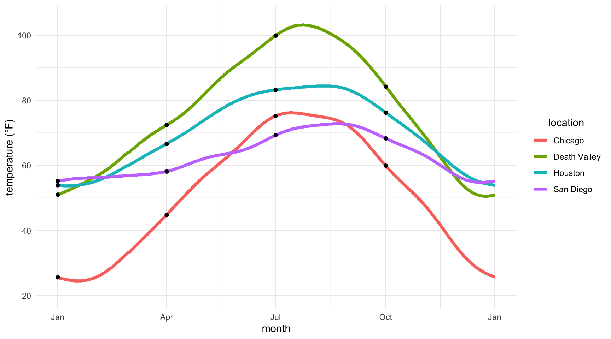
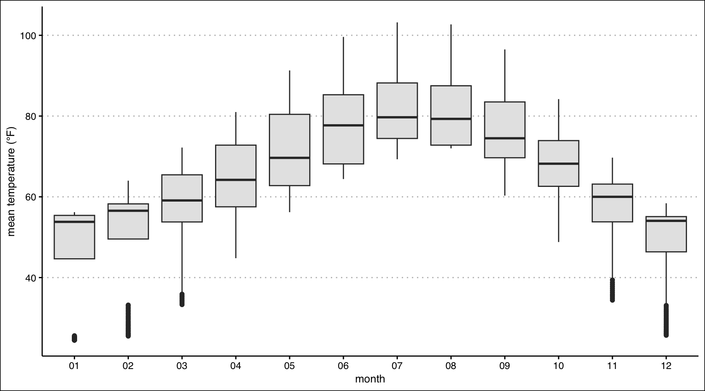
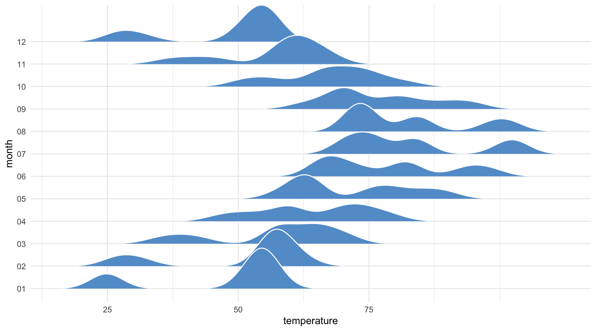
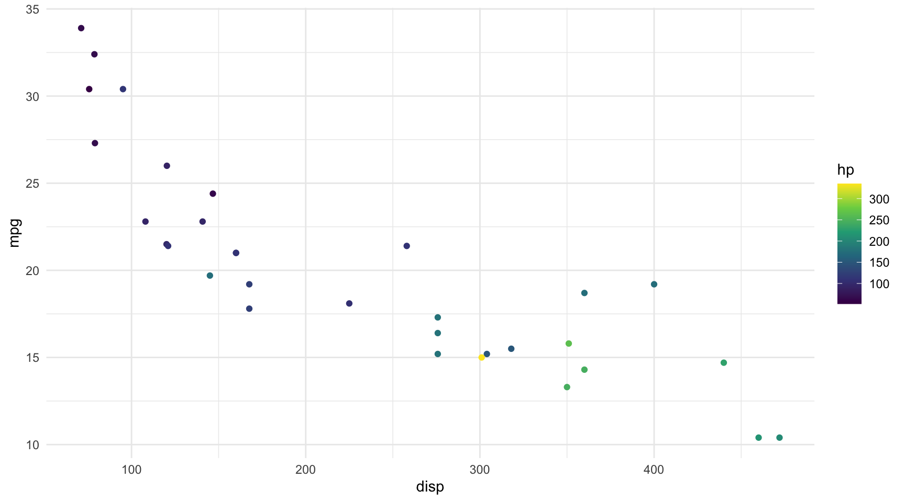
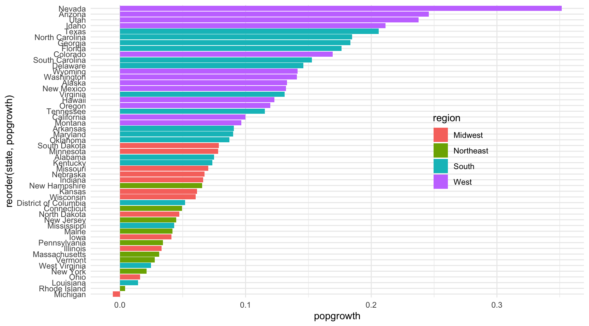
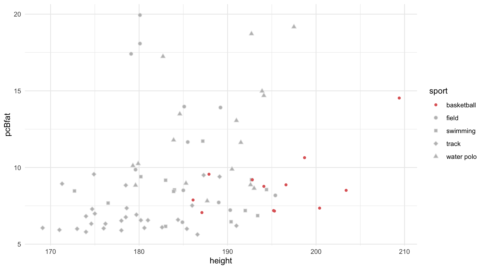
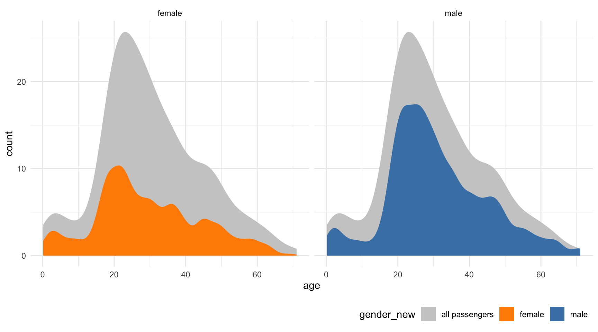
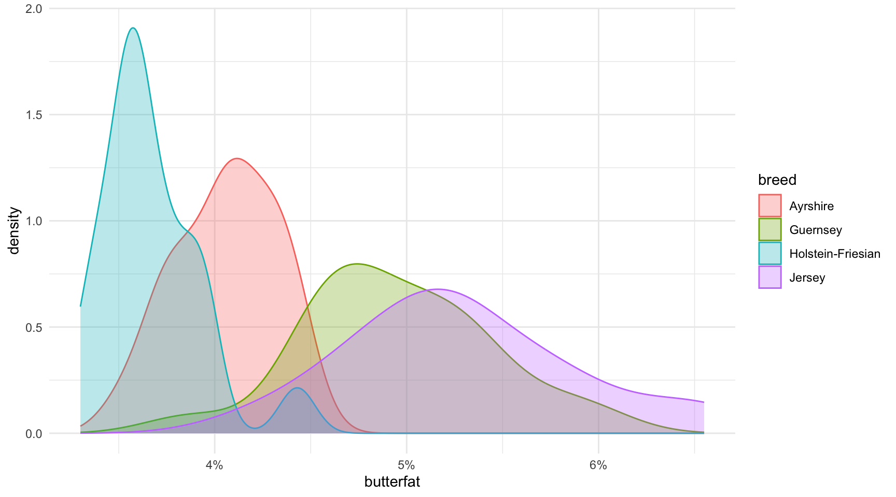
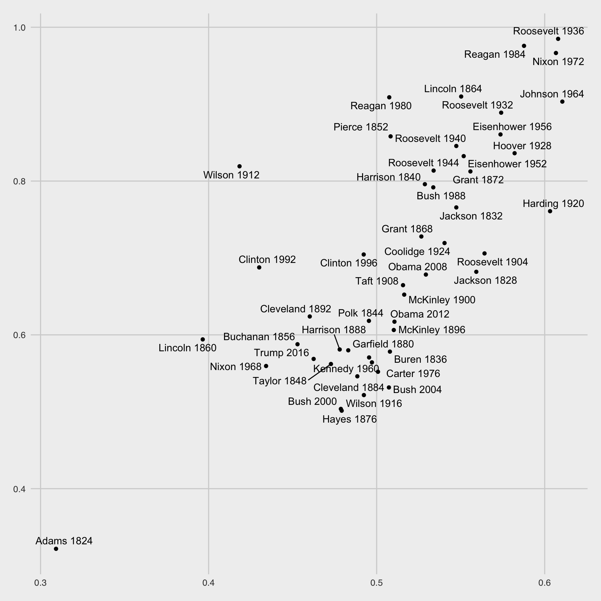

Code
library(tidyverse)DANL 310: Introduction to Data Analytics
library(tidyverse)ncdc_temp <- read_csv(
'https://bcdanl.github.io/data/ncdc_temp_cleaned.csv')ggplot(ncdc_temp,
aes(x = date,
y = temperature)) +
geom_line(aes(color = location),
linewidth = 1.5) +
geom_point(data = ncdc_temp |>
filter(month %in% c("01", "04", "07", "10"),
day == 1)) +
scale_x_date(breaks = ymd(c("0000-01-01",
"0000-04-01",
"0000-07-01",
"0000-10-01",
"0000-12-31")),
labels = c("Jan", "Apr", "Jul", "Oct", "Jan")) +
scale_y_continuous(breaks = c(20,40,60,80,100),
limits = c(20,105)) +
labs(x = "month",
y = "temperature (°F)") +
theme_minimal() +
theme(legend.title = element_text(hjust = .5) )
ncdc_temp |>
ggplot(aes(x = month,
y = temperature)) +
geom_boxplot(fill = "grey90") +
labs(y = "mean temperature (°F)") +
ggthemes::theme_clean()
library(ggridges)
ncdc_temp |>
ggplot(aes(x = temperature,
y = month)) +
geom_density_ridges(fill = "#639dd1",
color = "white",
rel_min_height = 0.01
) +
scale_x_continuous(breaks = c(25, 50, 75)) +
theme_minimal()
mtcars <- datasets::mtcarsmtcars |>
ggplot(aes(x = disp, y = mpg,
color = hp)) +
geom_point() +
scale_color_viridis_c() +
theme_minimal()
popgrowth_df <- read_csv(
'https://bcdanl.github.io/data/popgrowth.csv')popgrowth_df |>
ggplot(aes(x = popgrowth,
y = reorder(state,popgrowth),
fill = region)) +
geom_col() + # geom_bar(stat = "identity")
theme_minimal() +
theme(legend.position = c(0.75,0.5)) 
male_Aus <- read_csv(
'https://bcdanl.github.io/data/aus_athletics_male.csv')male_Aus |>
ggplot(aes(x = height,
y = pcBfat,
color = sport,
shape = sport,
fill = sport)) +
geom_point(size = rel(2)) +
scale_shape_manual(values = 20:24) +
scale_color_manual(values = c("#E06666", "grey90","grey90","grey90","grey90")) +
scale_fill_manual(values = c("red", rep("grey",4))) +
theme_minimal() 
titanic <- read_csv(
'https://bcdanl.github.io/data/titanic_cleaned.csv')titanic_female <- titanic |>
mutate(gender_new = "all passengers",
gender = "female")
titanic_male <- titanic |>
mutate(gender_new = "all passengers",
gender = "male")
new_df <- titanic_female |>
rbind(titanic_male)
ggplot(data = titanic |>
mutate(gender_new = gender),
aes(x = age,
y = after_stat(count),
fill = gender_new)) +
geom_density(data = new_df,
color = "transparent") +
geom_density(color = "transparent",
bw = 2) +
facet_wrap(~gender) +
scale_fill_manual(values = c("grey80", "darkorange", "steelblue")) +
theme_minimal() +
theme(
legend.position = "bottom",
legend.justification = "right"
)
cows_filtered <- read_csv(
'https://bcdanl.github.io/data/cows_filtered.csv')cows_filtered |>
ggplot(aes(x = butterfat,
fill = breed,
color = breed)) +
geom_density(alpha = .3) +
scale_x_continuous(breaks = c(4,5,6),
labels = c("4%", "5%", "6%")) +
theme_minimal()
cows_filtered |>
ggplot(aes(x = butterfat,
fill = breed,
color = breed)) +
geom_density(alpha = .3) +
scale_x_continuous(labels = scales::percent_format(scale = 1)) +
theme_minimal()organdata <- socviz::organdata
by_country <- organdata |>
group_by(consent_law, country) |>
summarize(donors_mean= mean(donors, na.rm = TRUE),
donors_sd = sd(donors, na.rm = TRUE),
gdp_mean = mean(gdp, na.rm = TRUE),
health_mean = mean(health, na.rm = TRUE),
roads_mean = mean(roads, na.rm = TRUE),
cerebvas_mean = mean(cerebvas, na.rm = TRUE))ggplot(by_country,
aes(x = roads_mean,
y = donors_mean)) +
geom_point() +
geom_text(aes(label = country),
hjust = 1,
vjust = -.5)
socviz::elections_historic |> select(2:7) # A tibble: 49 × 6
year winner win_party ec_pct popular_pct popular_margin
<int> <chr> <chr> <dbl> <dbl> <dbl>
1 1824 John Quincy Adams D.-R. 0.322 0.309 -0.104
2 1828 Andrew Jackson Dem. 0.682 0.559 0.122
3 1832 Andrew Jackson Dem. 0.766 0.547 0.178
4 1836 Martin Van Buren Dem. 0.578 0.508 0.142
5 1840 William Henry Harrison Whig 0.796 0.529 0.0605
6 1844 James Polk Dem. 0.618 0.495 0.0145
7 1848 Zachary Taylor Whig 0.562 0.473 0.0479
8 1852 Franklin Pierce Dem. 0.858 0.508 0.0695
9 1856 James Buchanan Dem. 0.588 0.453 0.122
10 1860 Abraham Lincoln Rep. 0.594 0.396 0.101
# ℹ 39 more rowslibrary(ggrepel)
elections_historic <- elections_historic
p <- ggplot(elections_historic, aes(x = popular_pct, y = ec_pct,
label = winner_label))
p +
geom_point() +
geom_text_repel() +
theme_fivethirtyeight()